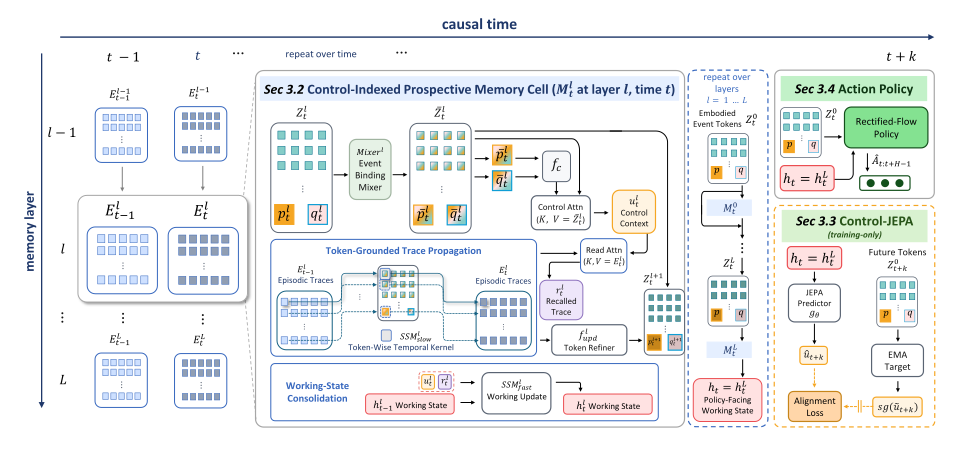

Observe
The ball is visible under one cup.
Control-Indexed Prospective Memory for Visuomotor Manipulation
1MARS Lab, Nanyang Technological University 2Institute for Infocomm Research, A*STAR 3National University of Singapore
*Equal contribution †Corresponding author
Motivation
In long-horizon manipulation, the information that determines an action may appear long before the robot needs to act. At the decision point, the same visible scene can require different actions depending on its history. We call this gap observation–action delay.
The ball is visible under one cup.
Cups move while the evidence is occluded.
The current frame alone is ambiguous.
The correct choice depends on the earlier event.
“ Robot memory should not merely store more of the past. It should make the right past actionable at the right moment.
Method
Chameleon keeps a memory that answers the question the robot is facing right now. Scroll through the original method figure one operation at a time.

Real-robot benchmark
Each episode shows the evidence early, then hides, moves or repeats it until the scene no longer tells the robot what to do. At that aliased decision point, look-alike scenes call for different actions, so a policy can only succeed by recovering the right past.
Scoring separates motor errors from memory errors: a policy can execute a clean grasp and still pick the wrong target.
Results
Real-robot rollouts on Camo-Dataset first, grouped by task and by the hidden value each episode has to remember. Then one successful rollout for every task in the three public simulation benchmarks.
Chameleon rollouts on Camo-Dataset. Click a phase to jump to it.
One successful rollout per task, shown from the third-person camera.
Experiments
Camo-Dataset scores manipulation (MSR), the history-correct decision (DSR) and both together (SR) separately, so memory errors show up apart from motor errors. The public benchmarks then test whether the same design carries over.
*ReMem-VLA reports a modified MemoryBench protocol, so it is only partly comparable. The 2-task MIKASA-Robo row follows the specialist setting of DP-VPWEM.
Citation + resources
Read the full paper for architecture details, protocol definitions, per-task results, ablations, hyperparameters, and limitations.